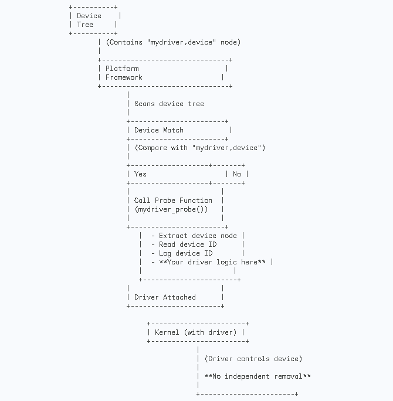

Hello World Device tree
Introduction
The “mydriver” Linux kernel module is a simple example that demonstrates the integration of a platform driver with a Device Tree overlay. The module reads a device ID from the Device Tree during initialization and performs some basic operations in the probe function. Additionally, a Device Tree overlay is provided to configure the device in the Device Tree.
Driver Code
The following is the C code for the “mydriver” Linux kernel module:
#include <linux/module.h>
#include <linux/kernel.h>
#include <linux/platform_device.h>
#include <linux/of.h>
static int mydriver_probe(struct platform_device *pdev)
{
struct device_node *np = pdev->dev.of_node;
int device_id;
if (!np) {
pr_err("Device tree node not found\\n");
return -ENODEV;
}
// Read the device ID property
if (of_property_read_u32(np, "mydriver,device-id", &device_id)) {
pr_err("Failed to read device ID from device tree\\n");
return -EINVAL;
}
pr_info("Device ID from device tree: %d\\n", device_id);
// Your driver logic goes here
return 0;
}
static int mydriver_remove(struct platform_device *pdev)
{
// Your removal logic goes here
return 0;
}
static const struct of_device_id mydriver_of_match[] = {
{ .compatible = "mydriver,device", },
{},
};
MODULE_DEVICE_TABLE(of, mydriver_of_match);
static struct platform_driver mydriver_driver = {
.driver = {
.name = "mydriver",
.owner = THIS_MODULE,
.of_match_table = mydriver_of_match,
},
.probe = mydriver_probe,
.remove = mydriver_remove,
};
module_platform_driver(mydriver_driver);
MODULE_LICENSE("GPL");
MODULE_AUTHOR("Abhi");
Explanation
Include Headers: - Include necessary Linux kernel headers for modules, kernel, platform devices, and device tree handling.
Probe Function (`mydriver_probe`): - The mydriver_probe function is the probe function called when a device with a matching compatible string is found. - It retrieves the device tree node associated with the platform device. - Checks if the device tree node exists; if not, it prints an error message and returns an error code. - Reads the “mydriver,device-id” property from the device tree node and stores it in the device_id variable. - If reading fails, it prints an error message and returns an error code. - Prints the device ID to the kernel log. - You can add your specific driver logic in the designated section.
Remove Function (`mydriver_remove`): - The mydriver_remove function is called when the driver is being removed. - You can implement any cleanup logic specific to your driver in this function.
Device Table (`mydriver_of_match`): - Defines a device table entry with the compatible string “mydriver,device.”
Platform Driver Structure (`mydriver_driver`): - Defines the platform driver structure, specifying the driver name, owner, and the device table for matching. - Associates the probe and remove functions.
Module Initialization (`module_platform_driver`): - Initializes the module and registers the platform driver.
Module License: - Specifies the GPL license for the module.
Device Tree Overlay
The following is the Device Tree overlay for the “mydriver” module:
/ {
mydriver_node {
compatible = "mydriver,device";
mydriver,device-id = <123>;
};
};
Explanation
Device Tree Overlay: - Defines a device tree overlay specifying a device node named mydriver_node. - Specifies the compatible string as “mydriver,device,” indicating compatibility with the driver. - Sets the “mydriver,device-id” property to a specific value (123 in this example). Replace this with your actual device ID.
Device Node (`mydriver_node`): - Represents the device node in the device tree overlay. - Specifies the compatible string to match with the driver.
Device ID Property (`mydriver,device-id`): - Sets a specific device ID for the driver to read during initialization. - The value (123) is just an example; replace it with the actual device ID you want to use.
Device Tree Directory Listing
To explore the contents of the Device Tree in the sysfs file system, you can use the following command:
ls /sys/firmware/devicetree/base
#address-cells cpus model pmu@4b000000
#size-cells fixedregulator0 mydriver_node serial-number
aliases interrupt-parent name soc
chosen leds ocp
compatible memory@80000000 opp-table
This command lists the available nodes and properties in the device tree. Each node is represented as a directory, and properties are represented as files within those directories.
Platform Driver Probing Process
The platform driver probing process involves the interaction between the Device Tree, the Platform Framework, and the Kernel. Here’s a detailed breakdown:
Device Tree: Contains the device tree specification with a node named “mydriver,device” representing the platform device.
Platform Framework: The platform framework in the kernel scans the device tree for platform devices.
Device Match: The platform framework matches the device in the device tree based on compatibility strings, identifying the “mydriver,device” node.
Probe Function Call: If there is a match, the kernel calls the probe function (mydriver_probe()) associated with the platform driver.
Probe Function Execution: - The mydriver_probe() function performs tasks like extracting device information, reading device ID from the device tree, logging device ID, and executing your driver-specific logic.
Driver Attached: The driver is successfully attached to the platform device, gaining control over the device.
Kernel (with Driver): The kernel, with the attached driver, controls the platform device.
No Independent Removal: In this simplified scenario, the removal logic is not explicitly shown, and there’s no independent removal step. The driver remains attached as long as the kernel is running.
Hello World Device tree with more properties
The module code consists of a structure to hold driver-specific data and functions to handle device probing and removal.
`struct mydriver_data`: This structure defines the driver-specific data, including the device ID, device name, base address, size, interrupt number, and compatible string.
`mydriver_probe` function: This function is called when the associated device is detected. It extracts information from the device tree using Open Firmware (OF) functions. Key steps include:
Obtaining the device node using pdev->dev.of_node.
Allocating memory for driver-specific data using devm_kzalloc.
Reading various properties from the device tree using of_property_read_* functions.
Printing the extracted information using pr_info.
Setting the driver-specific data using platform_set_drvdata.
`mydriver_remove` function: This function is called when the device is being removed. You would typically place cleanup logic here.
`mydriver_of_match` array: This array is used to match the device tree node with the compatible string specified in the driver. In this case, it matches with “mydriver,device”.
`mydriver_driver` structure: This structure defines the platform driver, specifying the name, owner, and callback functions for probing and removal.
Module Information: Licensing information, authorship, and other module-level details.
#include <linux/module.h>
#include <linux/kernel.h>
#include <linux/platform_device.h>
#include <linux/of.h>
struct mydriver_data {
int device_id;
const char *device_name;
resource_size_t reg_base;
resource_size_t reg_size;
int interrupt_number;
const char *compatible;
};
static int mydriver_probe(struct platform_device *pdev)
{
struct device_node *np = pdev->dev.of_node;
struct mydriver_data *data;
int ret;
if (!np) {
pr_err("Device tree node not found\\n");
return -ENODEV;
}
// Allocate memory for driver-specific data
data = devm_kzalloc(&pdev->dev, sizeof(*data), GFP_KERNEL);
if (!data)
return -ENOMEM;
// Read the device ID property
if (of_property_read_u32(np, "mydriver,device-id", &data->device_id)) {
pr_err("Failed to read device ID from device tree\\n");
return -EINVAL;
}
// Read the device name property
ret = of_property_read_string(np, "mydriver,device-name", &data->device_name);
if (ret) {
pr_err("Failed to read device name from device tree\\n");
return ret;
}
// Read the reg property (base address and size)
ret = of_address_to_resource(np, 0, &data->reg_base, &data->reg_size);
if (ret) {
pr_err("Failed to read 'reg' property from device tree\\n");
return ret;
}
// Read the interrupt property
if (of_property_read_u32(np, "interrupts", &data->interrupt_number)) {
pr_err("Failed to read 'interrupts' property from device tree\\n");
return -EINVAL;
}
// Read the compatible property
ret = of_property_read_string(np, "compatible", &data->compatible);
if (ret) {
pr_err("Failed to read 'compatible' property from device tree\\n");
return ret;
}
pr_info("Device ID from device tree: %d\\n", data->device_id);
pr_info("Device name from device tree: %s\\n", data->device_name);
pr_info("Base address: 0x%llx, Size: 0x%llx\\n", (unsigned long long)data->reg_base, (unsigned long long)data->reg_size);
pr_info("Interrupt number: %d\\n", data->interrupt_number);
pr_info("Compatible string: %s\\n", data->compatible);
// Your driver logic goes here
// Store the driver-specific data in the platform device
platform_set_drvdata(pdev, data);
return 0;
}
static int mydriver_remove(struct platform_device *pdev)
{
// Your removal logic goes here
return 0;
}
static const struct of_device_id mydriver_of_match[] = {
{ .compatible = "mydriver,device", },
{},
};
MODULE_DEVICE_TABLE(of, mydriver_of_match);
static struct platform_driver mydriver_driver = {
.driver = {
.name = "mydriver",
.owner = THIS_MODULE,
.of_match_table = mydriver_of_match,
},
.probe = mydriver_probe,
.remove = mydriver_remove,
};
module_platform_driver(mydriver_driver);
MODULE_LICENSE("GPL");
MODULE_AUTHOR("Abhi");
Device Tree Snippet
The device tree snippet provides information about the hardware connected to the mydriver module.
Device Node Definition: The device node named mydriver_node specifies properties such as compatibility, device ID, device name, register information (base address and size), interrupt number, and device status.
compatible: Matches with the driver’s compatible string.
mydriver,device-id: Specifies the device ID.
mydriver,device-name: Specifies the device name.
reg: Specifies the base address (0x10000000) and size (0x1000) of the device registers.
interrupts: Specifies the interrupt number (42).
status: Specifies that the device is in an “okay” state (enabled).
/dts-v1/;
/plugin/;
/ {
compatible = "myboard";
mydriver_node {
compatible = "mydriver,example-device";
mydriver,device-id = <123>;
mydriver,device-name = "example_device";
reg = <0x10000000 0x1000>; // base address: 0x10000000, size: 0x1000
interrupts = <42>; // interrupt number
status = "okay"; // device is enabled
};
};